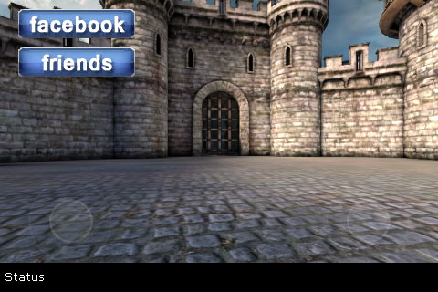
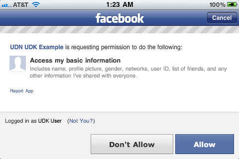
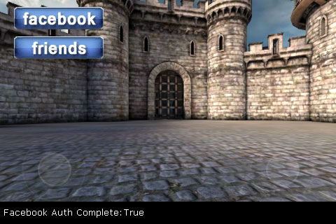
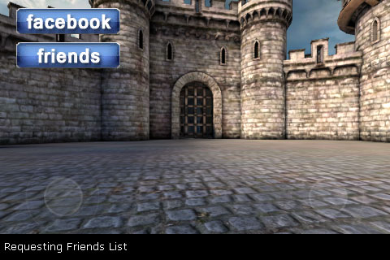
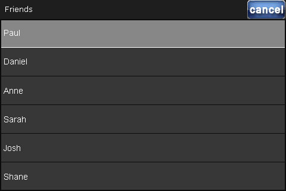
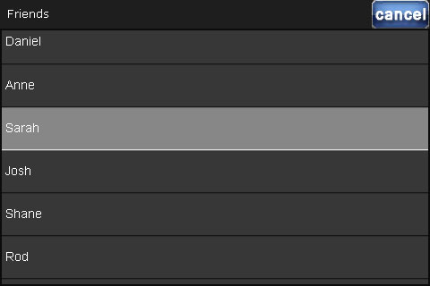

UDN
Search public documentation:
FacebookIntegration
日本語訳
中国翻译
한국어
Interested in the Unreal Engine?
Visit the Unreal Technology site.
Looking for jobs and company info?
Check out the Epic games site.
Questions about support via UDN?
Contact the UDN Staff
中国翻译
한국어
Interested in the Unreal Engine?
Visit the Unreal Technology site.
Looking for jobs and company info?
Check out the Epic games site.
Questions about support via UDN?
Contact the UDN Staff
UE3 Home > PlatformInterface Framework > Facebook Integration
Facebook Integration
Overview
FacebookIntegration
FacebookIntegration class is the base class containing the functionality for connecting to and interacting with Facebook. It inherits from the PlatformInterfaceBase and makes use of the delegate system contained in that class. Each platform (PC, iOS, etc.) has its own subclass extending from FacebookIntegration that provides the implementation specific to that platform.
Properties
- AppID - The ID of the Facebook application to link the game to. This is obtained by setting up an application on Facebook's developer site. Each game should specify this value in the
DefaultEngine.iniconfig file. - Username - Holds the username of the player obtained through the authorization process.
- UserID - Holds the Facebook ID of the player obtained through the authorization process.
- AccessToken - Holds the access token for the player obtained through the authorization process.
- FriendsList - An array of
FacebookFriendsto hold the player's friends list.- Name - The display name of the friend.
- Id - The facebook user ID of the friend.
- Init - Event called by the engine to initialize the Facebook integration.
- Authorize - Starts the process for allowing the game to access the player's Facebook info. Requires the player to grant permissions to the Facebook app.
- IsAuthorized - Returns whether the app has been authorized by the player.
- WebRequest [URL] [Verb] [Payload] [Tag] [bRetrieveHeaders] [bForceBinaryResponse] - Sends a generic web request to the given URL with the specified data. The response comes through a
FID_WebRequestCompletedelegate call.- URL - The URL for the request, can be http or https (if the current platform supports sending https)
- Verb - A string specifying the type of request ("POST", "GET").
- Payload - The string to send as the payload in the web request (as UTF8).
- bRetrieveHeaders - If TRUE, the response object will contain all the headers (using false will reduce a lot of memory churn).
- bForceBinaryResponce - If TRUE, then the response is never converted to a string and is stored in the binary response data.
- FacebookRequest [GraphRequest] - Sends a Facebook GraphAPI request. The response comes through a
FID_FacebookRequestCompletedelegate call.- GraphRequest - The request to make, i.e.
"me/friends". See the Facebook GraphAPI documentation for more info.
- GraphRequest - The request to make, i.e.
- FacebookDialog [Action] [ParamKeysAndValues] - Opens a platform dialog to eprform a Facebook action, i.e. posting to the player's wall.
- Action - The type of dialog to open (i.e. "feed").
- ParamKeysAndvalues - An array of strings specifying the extra parameters to pass to the dialog (dialog specific). Separate keys and values: < "key1", "value1", "key2", "value2" >
- Disconnect - Call this to disconnect from Facebook. Next time authorization happens, the auth webpage will be displayed again.
EFacebookIntegrationDelegate enum defines the IDs for the types of delegates that can receive callbacks. Delegates can be assigned to each of these using the Platform Interface Delegates system.
- FID_AuthorizationComplete - Delegates assigned to this ID are executed when a response from the authorization process is received.
- bSuccessful - TRUE.
- Data - Contains no data.
- FID_FacebookRequestComplete - Delegates assigned to this ID are executed when a response from a Facebook GraphAPI request is received.
- bSuccessful - TRUE.
- Data - Contains the response string from the GraphAPI request.
- FID_WebRequestComplete - Delegates assigned to this ID are executed when a response from a web request is received.
- bSuccessful - TRUE.
- Data - Contains the response string from the web request.
- FID_DialogComplete - Delegates assigned to this ID are executed when a response from a web request is received.
- bSuccessful - If TRUE, the dialog succeeded. Otherwise, the dialog was either canceled or failed.
- Data - Contains the response string (if any) from the dialog, i.e. a returning URL or error message.
- FID_FriendsListComplete - Delegates assigned to this ID are executed when a response from a request for the player's friends list is received.
- bSuccessful - If TRUE, the request was successful.
- Data - Contains no data. The list of friends is saved in the
FriendsListarray
Implementation Details
- Create your Facebook app through the Facebook developer site if you do not already have one.
- Add a
CFBundleURLTypesentry in yourUDKGameOverrides.plistfile to handle the callbacks from Facebook.<key>CFBundleURLTypes</key> <array> <dict> <key>CFBundleURLSchemes</key> <array> <string>fb[FacebookAppID]</string> </array> </dict> </array>[FacebookAppID]should be replaced with your app's ID. - In the
[FacebookIntegration]section of theDefaultEngine.inifile, set theAppIDproperty using the ID of your Facebook app. If you need extended permissions, list them here as well, one per line.[FacebookIntegration] AppID=[FacebookAppID] +Permissions=email +Permissions=read_stream
[FacebookAppID]should be replaced with your app's ID. See https://developers.facebook.com/docs/reference/api/permissions/ for the possible permissions. - Get a reference to the
FacebookIntegrationobject by calling the staticGetFacebookIntegration()of thePlatformInterfaceBaseclass and set up your delegates for the authorization, web request, and GraphAPI request callbacks, usually inPostBeginPlay()or some other initialization function depending on where you are placing the Facebook functionality.var FacebookIntegration Facebook; ... Facebook = class'PlatformInterfaceBase'.static.GetFacebookIntegration(); Facebook.AddDelegate(FID_AuthorizationComplete, OnFBAuthComplete); Facebook.AddDelegate(FID_FacebookRequestComplete, OnFBRequestComplete); Facebook.AddDelegate(FID_WebRequestComplete, OnWebRequestComplete);
OnFBAuthComplete,OnFBRequestComplete,OnWebRequestCompleteare just examples. These can be the names of any function matching the signature of thePlatformInterfaceDelegatedelegate.delegate PlatformInterfaceDelegate(const out PlatformInterfaceDelegateResult Result);
- When the user wishes to enable Facebook functionality, call
Authorize()on theFacebookIntegrationobject if the user has not already authorized (check by callingIsAuthroized()) and wait for theFID_AuthorizationCompletecallback.if (!Facebook.IsAuthorized()) { if (Facebook.Authorize() == true) { bIsFBAuthenticating = true; } return; } - Once authorization is successful, you can make requests using
WebRequest()orFacebookRequest()and handle them in your callback delegates.Facebook.FacebookRequest("me/friends");
CloudPC.uc script of the UDKBase\Classes directory and can be tested by using the CloudGame gametype.
Example
CloudGame Facebook example is provided below. The Facebook functionality is implemented within a mobile menu containing two buttons which allow the user to enable Facebook integration and then get a list of their friends, respectively. The friends are displayed in a scrolling list where they can be selected and the menu also contains a status bar that displays a text output of the actions being performed.
Note: This example makes use of the classes from the Custom Input Example from the Mobile Menu Technical Guide. Those classes will not be explained here.
The example starts by displaying a custom mobile menu:

Tapping the "Facebook" button starts the authorization process, switching to the Facebook app on the device (or the Facebook site in Safari if the app is not installed):

After the user agrees, they are redirected back to the game where the status has been updated to reflect the successful authorization:

Tapping the "Friends" button at this point will initiate a GraphAPI request for the friends list of the user:

When the request returns, the friends are added to the list in the menu and it is displayed:

The list can be scrolled and friends can be selected:

When a friend is selected, the list is closed and the selected friend then appears in the status bar of the menu:
Mobile Menu
class SocialMenu extends UDNMobileMenuScene;
/** Reference to the Facebook object */
var FacebookIntegration Facebook;
/** Are we currently authenticating with facebook? */
var bool bIsFBAuthenticating;
/** Have we already requested friends (because we don't want to send the request each time we wnt to view them) */
var bool bFriendsListPopulated;
/**
* Called to initialize the menu and set up the scene
*/
function InitMenuScene(MobilePlayerInput PlayerInput, int ScreenWidth, int ScreenHeight, bool bIsFirstInitialization)
{
Super.InitMenuScene(PlayerInput, ScreenWidth, ScreenHeight, bIsFirstInitialization);
//initialize list
List.InitMenuObject(PlayerInput, self, ScreenWidth, ScreenHeight, bIsFirstInitialization);
//Get the reference to the Facebook object singleton
Facebook = class'PlatformInterfaceBase'.static.GetFacebookIntegration();
//Set the delegates to use for the authorization and GraphAPI request callbacks (we're not using any web requests)
Facebook.AddDelegate(FID_AuthorizationComplete, OnFBAuthComplete);
Facebook.AddDelegate(FID_FacebookRequestComplete, OnFBRequestComplete);
//Set up some delegates for our menu objects (buttons, list, etc.)
UDNMobileMenuButton(FindMenuObject("Authorize")).OnClick = AuthorizeFacebook;
UDNMobileMenuButton(FindMenuObject("Friends")).OnClick = RequestFriends;
List.OnChange = OnSelectFriend;
List.OnCancel = HideFriendsList;
}
/**
* Called when the menu is closed to clean up the scene
*/
function bool Closing()
{
//Clear all the delegates when the menu closes
Facebook.ClearDelegate(FID_AuthorizationComplete, OnFBAuthComplete);
Facebook.ClearDelegate(FID_FacebookRequestComplete, OnFBRequestComplete);
return super.Closing();
}
/**
* Callback from the "Authorize" button's OnClick delegate - Performs the Facebook authorization process
*
* The parameters are not used - they are needed in this case simply because this is matching the OnClick delegate of the UDNMobileMenuButton
*/
function AuthorizeFacebook(UDNMobileMenuObject Sender, float X, float Y)
{
//have we authorized previously?
if (!Facebook.IsAuthorized())
{
//send for authorization
UDNMobileMenuLabel(FindMenuObject("Status")).Caption = "Facebook Not Authorized";
if (Facebook.Authorize() == true)
{
UDNMobileMenuLabel(FindMenuObject("Status")).Caption = "Facebook Is Authorizing";
bIsFBAuthenticating = true;
}
}
else
{
//set status as authorized
UDNMobileMenuLabel(FindMenuObject("Status")).Caption = "Facebook Authorized";
}
}
/**
* Callback from the "Friends" button's OnClick delegate - Sends the Facebook GraphAPI request for the user's friends
*
* The parameters are not used - they are needed in this case simply because this is matching the OnClick delegate of the UDNMobileMenuButton
*/
function RequestFriends(UDNMobileMenuObject Sender, float X, float Y)
{
//have we requested friends previously?
if(!bFriendsListPopulated)
{
//send a request to graphAPI for friends list
UDNMobileMenuLabel(FindMenuObject("Status")).Caption = "Requesting Friends List";
Facebook.FacebookRequest("me/friends");
}
else
{
//show the previously populated friends list
List.bIsHidden = false;
}
}
/**
* Callback from the list when an item is selected - Sets the text of the status bar label and closes the list
*
* @item - holds the name of the friend that was selected in the list
*/
function OnSelectFriend(int Idx, string Item, float X, float Y)
{
UDNMobileMenuLabel(FindMenuObject("Status")).Caption = item;
list.bIsHidden=true;
}
/**
* Callback from the list when the "cancel" button is tapped - closes the list
*/
function HideFriendsList()
{
list.bIsHidden=true;
}
/**
* Callback from Authorize()
*
* @Result - Holds the data sent back from the authorization
*/
function OnFBAuthComplete(const out PlatformInterfaceDelegateResult Result)
{
//set status to reflect successful authorization
UDNMobileMenuLabel(FindMenuObject("Status")).Caption = "Facebook Auth Complete:"$Result.bSuccessful;
bIsFBAuthenticating = false;
}
/**
* Callback from GraphAPI requests
*
* @Result - Holds the data sent back from the request
*/
function OnFBRequestComplete(const out PlatformInterfaceDelegateResult Result)
{
local JsonObject Root, FriendsArray, Friend;
local int Index;
if (Result.bSuccessful)
{
//set status as successful request
UDNMobileMenuLabel(FindMenuObject("Status")).Caption = "Facebook Request Successful";
//get the data from the request
Root = class'JsonObject'.static.DecodeJson(Result.Data.StringValue);
// get the friends array - top level is "data" = [friend,friend]
FriendsArray = Root.GetObject("data");
//output number of friends to status
UDNMobileMenuLabel(FindMenuObject("Status")).Caption = "You have " $ FriendsArray.ObjectArray.length $ " friends:";
// loop over the friends
for (Index = 0; Index < FriendsArray.ObjectArray.length; Index++)
{
// get a friend object
Friend = FriendsArray.ObjectArray[Index];
// output friend info
UDNMobileMenuLabel(FindMenuObject("Status")).Caption = "Friend " $ Friend.GetStringValue("name") $ " has ID " $ Friend.GetStringValue("id");
//add new friend to the list
List.AddItem(Friend.GetStringValue("name"));
}
//display the list
List.bIsHidden = false;
bFriendsListPopulated = true;
}
else
{
//set status as unsuccessful request
UDNMobileMenuLabel(FindMenuObject("Status")).Caption = "Facebook Request Unsuccessful";
}
}
defaultproperties
{
//Authorize button
Begin Object Class=UDNMobileMenuButton Name=AuthorizeButton
Tag="Authorize"
Left=20
Top=10
Width=128
Height=32
TopLeeway=20
Images(0)=Texture2D'PlatformInterfaceContent.fb_label'
Images(1)=Texture2D'PlatformInterfaceContent.fb_label'
ImagesUVs(0)=(bCustomCoords=true,U=0,V=0,UL=128,VL=32)
ImagesUVs(1)=(bCustomCoords=true,U=0,V=0,UL=128,VL=32)
End Object
MenuObjects.Add(AuthorizeButton)
//Friends button
Begin Object Class=UDNMobileMenuButton Name=FriendsButton
Tag="Friends"
Left=20
Top=52
Width=128
Height=32
TopLeeway=20
TextFont=Font'EngineFonts.SmallFont'
Images(0)=Texture2D'PlatformInterfaceContent.fb_friends'
Images(1)=Texture2D'PlatformInterfaceContent.fb_friends'
ImagesUVs(0)=(bCustomCoords=true,U=0,V=0,UL=128,VL=32)
ImagesUVs(1)=(bCustomCoords=true,U=0,V=0,UL=128,VL=32)
End Object
MenuObjects.Add(FriendsButton)
//Status bar label
Begin Object class=UDNMobileMenuLabel name=Label0
Tag="Status"
Height=32
Width=480
Left=0
Top=288
TextFont=Font'EngineFonts.SmallFont'
BackgroundColors(0)=(R=0.0,G=0.0,B=0.0,A=1.0)
BackgroundColors(1)=(R=0.0,G=0.0,B=0.0,A=1.0)
CaptionColors(0)=(R=1.0,G=1.0,B=1.0,A=1.0)
CaptionColors(1)=(R=1.0,G=1.0,B=1.0,A=1.0)
Caption="Status"
End Object
MenuObjects.Add(Label0)
//Friends list
Begin Object class=UDNMobileMenuList name=List0
Tag="FriendsList"
bIsHidden=true
bHasCancel=true
Title="Friends"
End Object
List=List0
}
PlayerController
class SocialPC extends SimplePC;
event InitInputSystem()
{
Super.InitInputSystem();
MPI.OpenMenuScene(class'SocialMenu');
}
defaultproperties
{
InputClass=class'GameFramework.MobilePlayerInput'
}
Gametype
class SocialGame extends SimpleGame;
defaultproperties
{
PlayerControllerClass=class'UDNGame.SocialPC'
}